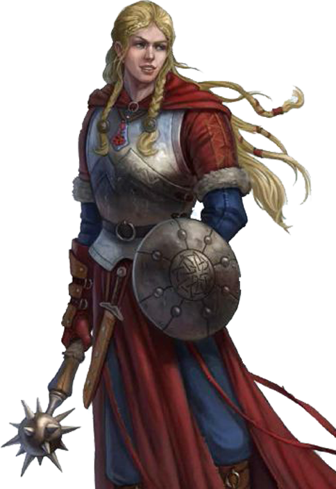
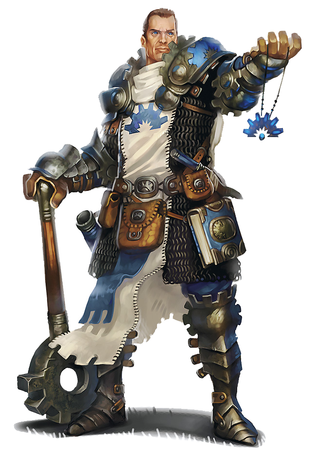

Clérigo (Cleric)

Braços e olhos erguidos em direção ao sol e uma oração nos lábios, um elfo começa a brilhar com uma luz interior que se espalha para curar seus companheiros desgastados pela batalha.
Cantando uma canção de glória, um anão balança seu machado em amplas faixas para cortar as fileiras de orcs dispostas contra ele, gritando louvores aos deuses a cada queda do inimigo.
Invocando uma maldição sobre as forças dos mortos-vivos, uma humana ergue seu símbolo sagrado enquanto a luz emana dele para afastar os zumbis que se aglomeram em torno de seus companheiros.
Os clérigos são intermediários entre o mundo mortal e os planos distantes dos deuses. Tão variados quanto os deuses que servem, os clérigos se esforçam para incorporar o trabalho de suas divindades. Nenhum padre comum, um clérigo está imbuído de magia divina.
Curandeiros e Guerreiros:
A magia divina, como o nome sugere, é o poder dos deuses, fluindo deles para o mundo. Os clérigos são canais desse poder, manifestando-o como efeitos milagrosos. Os deuses não concedem esse poder a todos que o buscam, mas apenas àqueles escolhidos para cumprir um chamado elevado.
Aproveitar a magia divina não depende de estudo ou treinamento. Um clérigo pode aprender orações estereotipadas e ritos antigos, mas a habilidade de lançar magias de clérigo depende da devoção e de um senso intuitivo dos desejos de uma divindade.
Os clérigos combinam a magia útil de curar e inspirar seus aliados com feitiços que prejudicam e atrapalham os inimigos. Eles podem provocar admiração e pavor, lançar maldições de peste ou veneno e até mesmo invocar chamas do céu para consumir seus inimigos. Para os malfeitores que mais se beneficiarão com uma maça na cabeça, os clérigos dependem de seu treinamento de combate para deixá-los entrar em combate corpo a corpo com o poder dos deuses ao seu lado.
Agentes Divinos:
Nem todo acólito ou oficiante de um templo ou santuário é um clérigo. Alguns sacerdotes são chamados a uma vida simples de serviço no templo, cumprindo a vontade dos seus deuses através da oração e do sacrifício, e não pela magia e pela força das armas. Em algumas cidades, o sacerdócio equivale a um cargo político, visto como um trampolim para posições mais elevadas de autoridade e que não envolve qualquer comunhão com um deus. Os verdadeiros clérigos são raros na maioria das hierarquias.
Quando um clérigo inicia uma vida de aventuras, geralmente é porque seu deus exige isso. Perseguir os objetivos dos deuses muitas vezes envolve enfrentar perigos em terras instáveis, destruir o mal ou procurar relíquias sagradas em tumbas antigas. Espera-se também que muitos clérigos protejam os adoradores de suas divindades, o que pode significar lutar contra invasores inimigos, negociar a paz entre nações em guerra ou selar um portal que permitiria a um príncipe demônio entrar no mundo.
A maioria dos clérigos aventureiros mantém alguma conexão com templos estabelecidos e ordens de sua fé. Um templo pode pedir a ajuda de um clérigo, ou um sumo sacerdote pode estar em condições de exigi-la.
Criando um Clérigo:
Ao criar um clérigo, a questão mais importante a considerar é qual divindade servir e quais princípios você deseja que seu personagem incorpore. A seção Deuses do Multiverso inclui listas de muitos dos deuses do multiverso. Verifique com seu DM para saber quais divindades estão em sua campanha.
Depois de escolher uma divindade, considere o relacionamento do seu clérigo com esse deus. Você entrou neste serviço por vontade própria? Ou será que o deus escolheu você, impelindo-o ao serviço sem se importar com seus desejos? Como os sacerdotes do templo da sua fé o consideram: um campeão ou um encrenqueiro? Quais são seus objetivos finais? Sua divindade tem uma tarefa especial em mente para você? Ou você está se esforçando para provar que é digno de uma grande missão?
Tabela do Clérigo:
| Nível | Bônus de Proficiência | Benefícios | Truques Conhecidos | Espaços de Magia por Nível | ||||||||
|---|---|---|---|---|---|---|---|---|---|---|---|---|
| 1st | 2nd | 3rd | 4th | 5th | 6th | 7th | 8th | 9th | ||||
| 1st | +2 | Conjuração, Domínio Divino | 3 | 2 | - | - | - | - | - | - | - | - |
| 2nd | +2 | Canalizar Divindade(1/descanso), Benefício de Domínio Divino | 3 | 3 | - | - | - | - | - | - | - | - | 3rd | +2 | - | 3 | 4 | 2 | - | - | - | - | - | - | - |
| 4th | +2 | Melhoria na pontuação de Habilidade | 4 | 4 | 3 | - | - | - | - | - | - | - |
| 5th | +3 | Destruir Mortos-Vivos(ND 1/2) | 4 | 4 | 3 | 2 | - | - | - | - | - | - |
| 6th | +3 | Canalizar Divindade(2/ descanso), Benefício do Domínio Divino | 4 | 4 | 3 | 3 | - | - | - | - | - | - |
| 7th | +3 | - | 4 | 4 | 3 | 3 | 1 | - | - | - | - | - |
| 8th | +3 | Melhoria de na Pontuação de Habilidade, Destruir Mortos-Vivos(ND 1), Benefício do Domínio Divino | 4 | 4 | 3 | 3 | 2 | - | - | - | - | - |
| 9th | +4 | - | 4 | 4 | 3 | 3 | 3 | 1 | - | - | - | - |
| 10th | +4 | Intervenção Divina | 5 | 4 | 3 | 3 | 3 | 2 | - | - | - | - |
| 11th | +4 | Destruir Mortos-Vivos(ND 2) | 5 | 4 | 3 | 3 | 3 | 2 | 1 | - | - | - |
| 12th | +4 | Melhoria de na Pontuação de Habilidade | 5 | 4 | 3 | 3 | 3 | 2 | 1 | - | - | - |
| 13th | +5 | - | 5 | 4 | 3 | 3 | 3 | 2 | 1 | 1 | - | - |
| 14th | +5 | Destruir Mortos-Vivos(ND 3) | 5 | 4 | 3 | 3 | 3 | 2 | 1 | 1 | - | - |
| 15th | +5 | - | 5 | 4 | 3 | 3 | 3 | 2 | 1 | 1 | 1 | - |
| 16th | +5 | Melhoria de na Pontuação de Habilidade | 5 | 4 | 3 | 3 | 3 | 2 | 1 | 1 | 1 | - |
| 17th | +6 | Destruir Mortos-Vivos (ND 4), Benefício do Domínio Divino | 5 | 4 | 3 | 3 | 3 | 2 | 1 | 1 | 1 | 1 |
| 18th | +6 | Canalizar Divindade (3/ descanso) | 5 | 4 | 3 | 3 | 3 | 3 | 1 | 1 | 1 | 1 |
| 19th | +6 | Melhoria de na Pontuação de Habilidade | 5 | 4 | 3 | 3 | 3 | 3 | 2 | 1 | 1 | 1 |
| 20th | +6 | Melhoria da Intervenção Divina | 5 | 4 | 3 | 3 | 3 | 3 | 2 | 2 | 1 | 1 |
Recursos de Classe:
Como um Clérigo, você recebe os seguintes recursos de classe.
Hit Points
Hit Dice: 1d8 por nível de classe.
Hit Points no nível 1: 8 + seu modificador de constituição.
Hit nos níveis mais altos: 1d8(ou 5) + seu modificador constituição por nível de classe após o primeiro nível.
Proficiências
Armadura: Armadura leve ou média, escudos.
Armas: Armas simples
Ferramentas: Nenhuma.
Salvaguardas: Sabedoria, Carisma
Habilidades: Escolha duas entre História, Percepção, Medicina, Persuasão e Religião
Equipamento
Você começa com os seguintes equipamentos, somados aos equipamentos garantidos pelo seu background (antecedentes).
(a) uma maça ou (b) um martelo de guerra (se proficiente).
(a) uma cota de malha ou (b) uma armadura de couro ou (c) uma cota de escamas (brunea).
(a) uma besta com 20 virotes ou (b) uma arma simples.
(a) um pacote do clérigo ou (b) um pacote do explorador
um escudo e um símbolo sagrado
Conjuração
Como canal para o poder divino, você pode lançar feitiços de clérigo. Veja Regras de Feitiços para ver as regras gerais de lançamento de feitiços e a Lista de Feitiços para ver a lista de feitiços do clérigo.
Truques
Enquanto você não estiver usando nenhuma armadura, sua Classe de Armadura é igual a 10 + seu modificador de Destreza + seu modificador de Constituição. Você pode usar um escudo e ainda ganhar esse benefício.
Ataque Imprudente
Você conhece três truques, à sua escolha, da lista de magias de clérigo. Você aprende truques de clérigo adicionais, à sua escolha, em níveis mais altos, como mostrado na coluna Truques Conhecidos da tabela O Clérigo.
Preparando e Conjurando Magias
A tabela O Clérigo mostra quantos espaços de magia você têm para conjurar suas magias de 1º nível e superiores. Para conjurar uma dessas magias, você precisa gastar um espaço do nível da magia ou superior. Você recupera todos os espaços gastos quando termina um descanso longo.
Você prepara a lista de magias disponíveis selecionando-as da lista de magias de clérigo. Você seleciona um número de magias igual ao seu modificador de Sabedoria + seu nível de clérigo (mínimo de uma magia). Essas magias devem ser de níveis que você possua espaços de magia.
Por exemplo, se você é um clérigo de 3º nível, você possui quatro espaços de magia de 1º nível e dois de 2º nível. Com Sabedoria 16, sua lista de magias preparadas pode incluir 6 magias, combinando as de 1º e 2º nível em qualquer ordem. Se você preparar a magia de 1º nível curar ferimentos, você pode conjurá-la com um espaço de magia de 1º ou de 2º nível. Ao conjurar a magia, você não a retira de sua lista de magias preparadas, podendo conjurá-la de novo se tiver espaços de magia disponíveis.
Você pode modificar a sua lista de magias preparadas quando termina um descanso longo. Preparar uma nova lista de magias de clérigo requer tempo gasto em preces e meditação: no mínimo 1 minuto por nível de magia para cada magia preparada.
Habilidade de Conjuração
Sabedoria é a sua habilidade para você conjurar suas magias de clérigo. O poder de suas magias vem da devoção que você tem ao seu deus. Você usa sua Sabedoria sempre que alguma magia se referir a sua habilidade de conjurar magias. Além disso, você usa o seu modificador de Sabedoria para definir a CD dos testes de resistência para as magias de clérigo que você conjura e quando você realiza uma jogada de ataque com uma magia.
CD para salvar magias = 8 + seu bônus de proficiência + seu modificador de Sabedoria
Modificador de ataque mágico = seu bônus de proficiência + seu modificador de Sabedoria
Conjuração por Ritual Você pode lançar qualquer magia de bardo que conheça como ritual se essa magia tiver a etiqueta ritual.
Foco em conjurações Você pode usar um símbolo Sagrado (veja a seção Equipamento de Aventura) como foco de conjuração para suas magias de Clérigo.
Domínio Divino
Escolha um domínio relacionado à sua divindade: Conhecimento, Enganação, Guerra, Luz, Natureza, Tempestade ou Vida. Cada domínio é detalhado ao final da descrição da classe e, cada um, fornece exemplos dos deuses associados a eles. Essa escolha, realizada no 1º nível, concede magias de domínio e outras características.
Ela também concede a você outras formas de utilizar seu Canalizar Divindade quando você ganhá-lo no 2º nível, bem como outros benefícios no 6º, 8º e 17º níveis.
Magias de Domínio
Cada domínio tem uma lista de magias – as magias de domínio – que você adquire nos níveis especificados pelo seu domínio. Quando você ganha uma magia de domínio, você sempre a tem preparada, e essa magia não conta no número de magias que você pode preparar a cada dia.
Se você tem uma magia de domínio que não aparece na lista de magias de clérigo, mesmo assim ela é uma magia de clérigo para você.
Canalizar Divindade
No 2º nível, você se torna capaz de canalizar energia diretamente de sua divindade, utilizando-a como combustível para efeitos mágicos. Você começa com dois efeitos: Expulsar Mortos-vivos e um efeito determinado pelo seu domínio. Alguns domínios conferem efeitos adicionais conforme você avança de nível, como consta na descrição de cada domínio.
Quando você usar seu Canalizar Divindade, você escolhe qual efeito quer criar. Você precisa terminar um descanso curto ou longo para usar a característica de novo.
Alguns efeitos requerem teste de resistência. Quando você usar um desses efeitos, a CD é igual a das suas magias de clérigo.
A partir do 6º nível, você pode Canalizar Divindade duas vezes entre descansos e a partir do 18º nível, três vezes. Você recupera os usos dessa característica quando termina um descanso curto ou longo.
Canalizar Divindade: Destruir Mortos-Vivos
Como uma ação, você apresenta seu símbolo sagrado e faz uma oração censurando os mortos-vivos. Cada morto-vivo que puder ver ou ouvir você a até 9 metros de você deve fazer um teste de resistência de Sabedoria. Se a criatura falhar no teste de resistência, ela será expulsa por 1 minuto ou até sofrer qualquer dano.
Uma criatura expulsa deve passar seus turnos tentando se afastar o máximo possível de você e não pode se mover voluntariamente para um espaço a até 9 metros de você. Também não pode reagir. Para sua ação, ele pode utilizar apenas a ação Correr ou tentar escapar de um efeito que o impeça de se mover. Se não houver para onde se mover, a criatura pode usar a ação Esquivar.
Melhoria na pontuação de habilidade
Quando você atinge o 4º nível e novamente no 8º, 12º, 16º e 19º nível, você pode aumentar um valor de habilidade de sua escolha em 2 ou pode aumentar dois valores de habilidade de sua escolha em 1. Como de costume, você pode' Não aumente um valor de habilidade acima de 20 usando esse recurso.
Usando a regra de talentos opcionais, você pode renunciar a esse recurso para escolher um talento de sua escolha.
Destruir Mortos-Vivos
A partir do 5º nível, quando um morto-vivo falha em seu teste de resistência contra seu recurso Expulsar Mortos-Vivos, a criatura é instantaneamente destruída se seu nível de desafio for igual ou inferior a um determinado limite, como mostrado na tabela Destruir Mortos-Vivos.
| Destruir Mortos-Vivos | |
|---|---|
| Nível de Clérigo | Destruir Mortos-Vivos |
| 5º | 1/2 ou menor |
| 8º | 1 ou menor |
| 11º | 2 ou menor |
| 14º | 3 ou menor |
| 17º | 4 ou menor |
Intervenção Divina
A partir do 10º nível, você pode rogar à sua divindade para que auxilie você em uma árdua tarefa.
Implorar pelo auxílio requer uma ação. Você precisa descrever o que busca e realizar uma rolagem de dado de percentagem. Se o resultado for menor ou igual ao seu nível de clérigo, sua divindade intervém. O Mestre escolhe a natureza da intervenção. O efeito de qualquer magia de clérigo ou magia de domínio é apropriado como resultado.
Se sua divindade intervir, você fica impedido de usar essa característica de novo por 7 dias. Do contrário, você pode usá-la de novo após terminar um descanso longo.
No 20º nível, seus pedidos de intervenção funcionam automaticamente, sem necessidade de rolagem de dados.
Domínios Divinos:
Em um panteão, cada divindade tem influência sobre certos aspectos da vida mortal e da civilização, chamados de domínios divinos. Juntando-se os domínios sobre os quais uma divindade tem influência, têm-se um conjunto denominado portfólio da divindade. Por exemplo, o portfólio do deus grego Apolo inclui os domínios do Conhecimento, da Luz e da Vida. Como um clérigo, você escolhe um aspecto de sua divindade para enfatizar, ganhando os poderes relativos àquele domínio.
Essa escolha pode ainda corresponder a um grupo dedicado àquele deus. Apolo, por exemplo, pode ser venerado em uma região como Phoebus (“radiante”) Apolo, enfatizando sua associação sobre o domínio da Luz, e em outro local como Apolo Acesius (“curandeiro”), enfatizando seu domínio sobre a Vida. Da mesma forma, o domínio que você escolher poderia simplesmente representar uma preferência pessoal, o aspecto da divindade que mais agrada você.
A descrição de cada domínio inclui exemplos de divindades que têm influência sobre eles. Estão incluídos deuses dos mundos dos Reinos Esquecidos, Greyhawk, Dragonlance e de Eberron, além dos antigos panteões Celta, Egípcio, Grego e Nórdico.
Domínio do Conhecimento:
Os deuses do conhecimento – como Oghma, Boccob, Gilean, Aureon e Thoth – valorizam o estudo e compreensão acima de tudo. Alguns ensinam que o conhecimento deve ser coletado e partilhado em bibliotecas e universidades ou promovem o conhecimento prático do artesanato e da invenção. Algumas divindades escondem conhecimentos e os mantém em segredo para si mesmos. E outros prometem a seus seguidores que eles ganharão poderes tremendos se desvendarem os segredos do multiverso.
Os seguidores desses deuses estudam conhecimento exotérico, coletam tomos antigos, escavam locais secretos da terra e aprendem tudo que podem. Alguns deuses do conhecimento que promovem a prática de ofícios e criação incluem deuses da forja como Gond, Reorx, Onatar, Moradin, Hefesto e Goibhniu.
| Magias do Domínio do Conhecimento | |
|---|---|
| Nível de Clérigo | Magias |
| 1º | Comando, Identificação |
| 3º | Augúrio, Sugestão |
| 5º | Dificultar Detecção, Falar com os Mortos |
| 7º | Olho Arcano, Confusão |
| 9º | Conhecimento Lendário, Vidência |
Bençãos do Conhecimento
No 1° nível, você aprende dois idiomas, à sua escolha. Você também se torna proficiente em duas perícias, à sua escolha, dentre as seguintes: Arcanismo, História, Natureza ou Religião.
Seu bônus de proficiência é dobrado em qualquer teste de habilidade que você fizer usando qualquer dessas perícias.
Canalizar Divindade: Conhecimento das Eras
A partir do 2° nível, você pode usar seu Canalizar Divindade para beber da fonte divina do conhecimento. Com uma ação, você escolhe uma perícia ou ferramenta. Por 10 minutos, você terá proficiência com a perícia ou ferramenta escolhida.
Canalizar Divindade: Ler Pensamentos
No 6° nível, você pode usar seu Canalizar Divindade para ler a mente de uma criatura. Você pode, então, usar seu acesso a mente da criatura para comandá-la.
Com uma ação, escolha uma criatura que você possa ver que esteja a até 18 metros de você. Essa criatura deve realizar um teste de resistência de Sabedoria, se for bem sucedida nesse teste, você não poderá usar essa característica contra ela novamente até terminar um descanso longo.
Se a criatura falhar no teste, você pode ler seus pensamentos superficiais (aqueles mais atuais, que refletem suas emoções e no que você está pensando constantemente) quando estiver a até 18 metros de você. Esse efeito dura por 1 minuto.
Durante esse tempo, você pode usar sua ação para terminar esse efeito e conjurar a magia sugestão na criatura sem gastar um espaço de magia. O alvo falha automaticamente no teste de resistência contra essa magia.
Conjuração Poderosa
A partir do 8° nível, você adiciona seu modificador de Sabedoria no dano causado por qualquer truque de clérigo.
Visão do Passado
A partir do 17° nível, você pode convocar visões do passado relacionadas a um objeto que você esteja segurando ou sobre o ambiente ao seu redor. Você gasta pelo menos 1 minuto meditando e rezando, então, recebe oníricos vislumbres turvos dos eventos recentes. Você pode meditar dessa maneira por um número de minutos igual ao seu valor de Sabedoria e deve manter a concentração durante esse tempo, como se você estivesse conjurando uma magia.
Quando você usa essa característica, você não pode usá-la novamente até terminar um descanso curto ou longo.
Leitura de Objeto. Ao segurar um objeto enquanto medita, você pode ter visões do dono anterior do objeto. Depois de meditar por 1 minuto, você descobre como o antigo dono adquiriu e perdeu o objeto, assim como o evento recente mais significativo envolvendo o objeto e seu dono. Se o objeto foi portado por outra criatura num passado recente (dentro de um número de dias igual ao seu valor de Sabedoria), você pode gastar 1 minuto adicional, por cada dono, para descobrir as mesmas informações sobre essa criatura.
Leitura Local. À medida que você medita, você tem visões dos eventos recentes nas suas vizinhanças próximas (uma sala, rua, túnel, clareira, ou similar, de até 15 metros cúbicos), voltando um número de dias igual ao seu valor de Sabedoria. Para cada minuto que você meditar, você descobre sobre um evento significativo, a partir dos mais recentes. Eventos significativos, normalmente envolvem emoções fortes, como batalhas e traições, casamentos e assassinatos, nascimentos e funerais. No entanto, também podem incluir eventos mais mundanos, que podem ser, no entanto, relevantes na sua situação atual.
Domínio da Enganação:
Deuses da enganação – como Tymora, Beshaba, Olidammara, o Viajante, Garl Glittergold e Loki – são causadores de travessuras e instigadores que se mantém como um desafio constante para a aceitação das ordens tanto de mortais quanto dos deuses. Eles são patronos dos ladrões, trapaceiros, apostadores, rebeldes e libertadores. Seus clérigos são uma força intrometida no mundo, ferindo orgulhos, zombando de tiranos, roubando dos ricos, libertando cativos e desrespeitando tradições vazias. Eles preferem subterfúgio, trapaças, enganação e rouba no lugar do confronto direto.
| Magias do Domínio do Conhecimento | |
|---|---|
| Nível de Clérigo | Magias |
| 1º | Enfeitiçar Pessoa, Disfarçar-se |
| 3º | Reflexos, Passos Sem Pegadas |
| 5º | Piscar,Dissipar Magia |
| 7º | Porta Dimensional, Metamorfose |
| 9º | Dominar Pessoa, Modificar Memória |
Benção Do Trapaceiro
A partir do momento em que você escolhe esse domínio, no 1° nível, você pode usar sua ação para tocar uma criatura voluntária além de você mesmo para conceder vantagem em testes de Destreza (Furtividade). Essa bênção dura por 1 hora ou até você usar essa característica novamente.
Canalizar Divindade: Invocar Duplicidade
A partir do 2° nível, você pode usar seu Canalizar Divindade para criar uma duplicada ilusória de si mesmo.
Com uma ação, você cria uma ilusão perfeita de si mesmo que dura por 1 minuto ou até você perder sua concentração (como se você estivesse se concentrando em uma magia). A ilusão aparece em um espaço desocupado que você possa ver a até 9 metros de você. Com uma ação bônus, no seu turno, você pode mover a ilusão até 9 metros para um espaço que você possa ver, mas ela deve permanecer a até 36 metros de você.
Pela duração, você pode conjurar magias como se você estivesse no espaço ocupado pela ilusão, mas você deve usar seus próprios sentidos. Além disso, quando ambos você e sua ilusão estiverem a 1,5 metro de uma criatura que possa ver a ilusão, você tem vantagem nas jogadas de ataque contra essa criatura, devido a distração causada no alvo pela ilusão.
Canalizar Divindade: Manto das Sombras
No 6° nível, você pode usar seu Canalizar Divindade para desaparecer.
Com uma ação, você se torna invisível até o final do seu próximo turno. Você se torna visível se atacar ou conjurar uma magia.GOLPE DIVINO
No 8º nível, você ganha a habilidade de imbuir seus ataques com arma com veneno – uma dádiva da sua divindade. Uma vez em cada um de seus turnos, quando você acertar uma criatura com um ataque com arma, você pode fazer o ataque causar 1d8 de dano de veneno extra ao alvo. Quando alcançar o 14º nível, o dano extra aumenta para 2d8.
Duplicidade Aprimorada
A partir do 17° nível, você pode criar até quatro duplicatas de você, ao invés de uma, quando usar Invocar Duplicidade. Com uma ação bônus, no seu turno, você pode mover quantas duplicadas quiser até 9 metros, até no máximo de 36 metros de distância.
Domínio da Guerra
A guerra tem muitas manifestações. Ela pode tornar pessoas comuns em heróis. Ela pode ser desesperadora e horripilante, com atos de crueldade e covardia obscurecendo momentos de bravura e coragem. Em ambos os casos, os deuses da guerra zelam pelos guerreiros e os recompensa pelos seus grandes feitos. Os clérigos de tais deuses se sobressaem em batalha, inspirando os outros a lutar o bom combate ou oferecendo atos de violência como suas orações.
Entre os deuses da guerra estão inclusos campeões da honra e bravura (como Torm, Heironeous e Kir-Jolith) assim como deuses da destruição e pilhagem (como Erythnul, a Fúria, Gruumsh e Ares) e deuses da conquista e dominação (como Bane, Hextor e Maglubiyet). Outros deuses da guerra (como Tempus, Nike e Nuada) tomam uma postura mais neutra, promovendo a guerra em todas as suas manifestações e apoiando os guerreiros em qualquer circunstância.
| Magias do Domínio da Guerra | |
|---|---|
| Nível de Clérigo | Magias |
| 1º | Auxílio Divino, Escudo da Fé |
| 3º | Arma Mágica, Arma Espiritual |
| 5º | Manto Cruzado, Espíritos Guardiões |
| 7º | Movimentação Livre, Pele de Pedra |
| 9º | Coluna de Chamas, Imobilizar Monstro |
Proficiência Adicional
No 1° nível, você adquire proficiência em armas marciais e em armaduras pesadas.
Sacerdote da Guerra
A partir do 1° nível, seu deus envia rajadas de inspiração a você quando você está engajado em combate. Quando você usa a ação de Ataque, você pode realizar um ataque com arma, com uma ação bônus.
Você pode usar essa característica um número de vezes igual ao seu modificador de Sabedoria (mínimo uma vez). Você recupera todos os usos gastos após terminar um descanso longo.
Canalizar Divindade: Ataque Dirigido
A partir do 2° nível, você pode usar seu Canalizar Divindade para golpear com precisão sobrenatural. Quando você realiza uma jogada de ataque, você pode usar seu Canalizar Divindade para recebe +10 de bônus na jogada. Você realiza essa escolha depois de ver a rolagem, mas antes do Mestre dizer se o ataque atingiu ou errou.
Canalizar Divindade: Benção do Deus da Guerra
No 6° nível, quando uma criatura a até 9 metros de você realizar uma jogada de ataque, você pode usar sua reação para conceder a criatura +10 de bônus nessa jogada, usando seu Canalizar Divindade. Você realiza essa escolha depois de ver a rolagem, mas antes do Mestre dizer se o ataque atingiu ou errou.
Golpe Divino
No 8º nível, você ganha a habilidade de imbuir seus ataques com energia divina. Uma vez em cada um de seus turnos, quando você acertar uma criatura com um ataque com arma, você pode fazer o ataque causar 1d8 de dano extra de mesmo tipo do dano da arma ao alvo. Quando alcançar o 14º nível, o dano extra aumenta para 2d8.
Avatar da Batalha
A partir do 17° nível, você ganha resistência a dano de concussão, cortante e perfurante de ataques não-mágicos.
Domínio da Luz
Deuses da luz – como Helm, Lathander, Pholtus, Branchala, a Chama Prateada, Belenus, Apolo e Re-Horakhty – promovem os ideias do renascimento e renovação, verdade, vigilância e beleza, muitas vezes usando o símbolo do sol. Alguns desses deuses são retratados como o próprio sol ou como um cocheiro que carrega o sol através do céu. Outros são sentinelas incansáveis cujos olhos penetram cada sombra e veem através de cada enganação. Alguns são divindades da beleza e arte que ensinam que a arte é o veículo para o aprimoramento da alma. Clérigos de um deus da luz são almas esclarecidas infundidas com radiação e o poder divino da visão do discernimento, conhecidos por afastar as mentiras e incineras a escuridão.
| Magias do Domínio da Guerra | |
|---|---|
| Nível de Clérigo | Magias |
| 1º | Mãos Flamejantes, Fogo das Fadas |
| 3º | Esfera Flamejante, Raio Ardente |
| 5º | Luz do Dia, Bola de Fogo |
| 7º | Guardião da Fé, Muralha de Fogo |
| 9º | Coluna de Chamas, Vidência |
Truque Adicional
Quando você escolhe esse domínio no 1° nível, você ganha otruque luz se você ainda não o conhecia.
Labareda Protetora
Também a partir do 1° nível, você pode interpor luz divina entre você e uma criatura atacante. Quando você for atacado por uma criatura a até 9 metros de você que você pode ver, você pode usar sua reação para impor desvantagem na jogada de ataque, causando labaredas de luz na frente do atacante antes dele atingir ou errar. Um atacante que não puder ser cegado é imune a essa característica.
Você pode usar essa característica um número de vezes igual ao seu modificador de Sabedoria (mínimo uma vez). Você recupera todos os usos gastos após terminar um descanso longo.
Canalizar Divindade: Radiação do Amanhecer
A partir do 2° nível, você pode usar seu Canalizar Divindade para criar uma explosão de luz solar, banindo a escuridão e causando dano radiante aos inimigos.
Com uma ação, você ergue seu símbolo sagrado e qualquer escuridão mágica num raio de 9 metros de você é dissipada. Além disso, cada criatura hostil a até 9 metros deve realizar um teste de resistência de Constituição. Uma criatura sofre dano radiante igual a 2d10 + seu nível de clérigo se falhar no teste e metade desse dano caso seja bem sucedida. Uma criatura que tenha cobertura total contra você não é afetada.
Labareda Aprimorada
No 6° nível, você também pode utilizar sua característica Labareda Protetora quando uma criatura que você possa ver a até 9 metros atacar outra criatura diferente de você.
Conjuração Poderosa
A partir do 8° nível, você adiciona seu modificador de Sabedoria no dano causado por qualquer truque de clérigo.
Coroa de Luz
A partir do 17° nível, você pode usar sua ação para ativar uma aura de luz solar que dura por 1 minuto ou até você dissipá-la usando outra ação. Você emite luz plena num raio de 18 metros e penumbra a até 9 metros além disso. Os seus inimigos na área de luz plena tem desvantagem nos testes de resistência contra suas magias que causam dano de fogo ou dano radiante.
Domínio da Luz
Os deuses da natureza são tão variados como a própria natureza do mundo, desde deuses inescrutáveis de profundas florestas (como Silvanus, Obad-Hai, Chislev, Balinor e Pã) até divindades amigáveis associadas a alguma fonte ou bosque em particular (como Eldath). Druidas reverenciam a natureza como um todo e podem vir a servir essas divindades, praticando ritos misteriosos e recitando orações a muito esquecidas em sua própria língua secreta. Porém, muitos desses deuses também possuem clérigos, campeões que tem um papel mais ativo em promover os interesses particulares de um deus da natureza. Esses clérigos devem caçar monstruosidades malignas que usurpam dos bosques, abençoar a colheita dos fieis ou murchar a cultura dos que irritarem seus deuses.
| Magias do Domínio da Natureza | |
|---|---|
| Nível de Clérigo | Magias |
| 1º | Amizade Animal, Falar com Animais |
| 3º | Pele de Árvore, Crescer Espinhos |
| 5º | Ampliar Plantas, Muralha de Vento |
| 7º | Dominar Besta, Vinha Esmagadora |
| 9º | Praga de Insetos, Caminhar em Árvores |
Acólito da Natureza
No 1° nível, você aprende um truque de druida, à sua escolha. Você também ganha proficiência em uma das seguintes perícias, à sua escolha: Adestrar Animais, Natureza ou Sobrevivência.
Proficiência Adicional
Também a partir do 1° nível, você adquire proficiência com armaduras pesadas.
Canalizar Divindade: Enfeitiçar Animais e Plantas
A partir do 2° nível, você pode usar seu Canalizar Divindade para enfeitiçar animais e plantas.
Com uma ação, você ergue seu símbolo sagrado e invoca o nome do seu deus. Cada besta ou criatura-planta que puder ver você num raio de 9 metros, deve realizar um teste de resistência de Sabedoria. Se a criatura falhar, ela estará enfeitiçada por você durante 1 minuto ou até sofrer dano. Enquanto estiver enfeitiçada por você, ela será amistosa a você a as criaturas que você designar.
Amortecer Elementos
No 6° nível, quando você ou uma criatura a até 9 metros de você sofrer dano de ácido, frio, fogo, elétrico ou trovão, você pode usar sua reação para conceder resistência a criatura contra aquele tipo de dano.
Golpe Divino
No 8º nível, você ganha a habilidade de imbuir seus ataques com energia divina. Uma vez em cada um de seus turnos, quando você acertar uma criatura com um ataque com arma, você pode fazer o atque causar 1d8 de dano de frio, fogo ou elétrico (à sua escolha) extra ao alvo. Quando alcançar o 14º nível, o dano extra aumenta para 2d8.
Senhor da Natureza
A partir do 17° nível, você ganha a habilidade de comandar animais e criaturas-planta. Enquanto a criatura estiver enfeitiçada pela sua característica Enfeitiçar Animais e Plantas, você pode usar uma ação bônus no seu turno para dizer verbalmente o que cada uma dessas criaturas devem fazer no próximo turno delas.
Domínio da Tempestade
Deuses cujo portfólio contenha o domínio da Tempestade –como Talos, Umberlee, Kord, Zeboim, o Devorador, Zeus e Thor – governam tormentas, mares e céus. Estãoinclusos deuses dos relâmpagos e trovões, deuses dos terremotos, alguns deuses do fogo e certos deuses da violência, força física e coragem. Em alguns panteões, um deus com esse domínio comanda os outros deuses e é conhecido pela justiça rápida levada através de relâmpagos. Nos panteões de povos marítimos e navegantes, deuses com esse domínio são divindades do oceano e patrono dos marinheiros. Deuses da tempestade enviam seus clérigos para inspirar pavor no povo comum, tanto para mantê-los no caminho da justiça e coragem quanto para oferecer sacrifícios de propiciação para afastar a ira divina.
| Magias do Domínio da Tempestade | |
|---|---|
| Nível de Clérigo | Magias |
| 1º | Névoa Obscurecente, Onda Trovejante |
| 3º | Lufada de Vento, Despedaçar |
| 5º | Convocar Relâmpagos, Nevasca |
| 7º | Controlar a Água, Tempestade de Gelo |
| 9º | Onda Destrutiva, Praga de Insetos |
Proficiência Adicional
A partir do 1° nível, você adquire proficiência em armas marciais e armaduras pesadas.
Ira da Tormenta
Também a partir do 1° nível, você pode repreender ataques violentamente. Quando uma criatura a 1,5 metro de você que você possa ver, atingir você com um ataque, você pode usar sua reação para forçar a criatura a realizar um teste de resistência de Destreza. A criatura sofre 2d8 de dano elétrico ou de trovão (à sua escolha) caso falhe no teste, e metade desse dano caso seja bem sucedido.
Você pode usar essa característica um número de vezes igual ao seu modificador de Sabedoria (mínimo uma vez). Você recupera todos os usos gastos após terminar um descanso longo.
Canalizar Divindade: Ira Destruidora
A partir do 2° nível, você pode usar seu Canalizar Divindade para empunhar o poder da tormenta com ferocidade desmedida.
Quando você rolar dano elétrico ou de trovão, você pode usar seu Canalizar Divindade para causar o máximo de dano, ao invés de rolá-lo.
Golpe de Relâmpago
No 6° nível, quando você causa dano elétrico a uma criatura Grande ou menor, você também pode empurrá-la para até 3 metros de distância de você.
Golpe Divino
No 8º nível, você ganha a habilidade de imbuir seus ataques com energia divina. Uma vez em cada um de seus turnos, quando você acertar uma criatura com um ataque com arma, você pode fazer o ataque causar 1d8 de dano trovejante extra ao alvo. Quando alcançar o 14º nível, o dano extra aumenta para 2d8.
Filho da Tormenta
A partir do 17° nível, você adquire deslocamento de voo igual a seu deslocamento de caminhada contanto que você não esteja no subterrâneo ou em local fechado.
Domínio da Vida
O domínio da vida foca na vívida energia positiva – uma das forças fundamentais do universo – que sustenta toda a vida. Os deuses da vida promovem a vitalidade e a saúde, curando os doentes e feridos, cuidando dos necessitados, além de afastar as forças da morte e hordas de mortos-vivos. Quase toda divindade não maligna pode alegar influência sobre esse domínio. Em particular divindades da agricultura (como Chauntea, Arawai e Demeter), do sol (como Lathander, Pelor e Re-Horakhty), da cura ou resistência (como Ilmater, Mishakal, Apolo e Diancecht), e do lar e comunidade (como Hestia, Hathor e Boldrei).
| Magias do Domínio da Vida | |
|---|---|
| Nível de Clérigo | Magias |
| 1º | Benção, Curar Ferimentos |
| 3º | Restauração Menor, Arma Espiritual |
| 5º | Sinal de Esperança, Revivificar |
| 7º | Proteção Contra a Morte, Guardião da Fé |
| 9º | Curar Ferimentos em Massa, Reviver os Mortos |
Proficiência Adicional
Quando você escolhe este domínio no 1º nível, você ganha proficiência com armaduras pesadas.
Discípulo da Vida
Também no 1º nível, suas magias de cura são mais efetivas. Sempre que você conjurar uma magia de cura para recuperar pontos de vida, o alvo daquela magia recupera pontos de vida adicionais iguais a 2 + nível da magia.
Canalizar Divindade: Preservar a Vida
A partir do 2º nível, você pode usar seu Canalizar Divindade para curar os feridos.
Como uma ação, você usa seu símbolo sagrado para invocar energia que pode recuperar um total de 5 vezes seu nível de clérigo em pontos de vida. Você escolhe quaisquer criaturas a até 9 metros de você e divide esses pontos entre elas. Essa característica só pode curar as criaturas a até metade de seu máximo de pontos de vida. Você não pode usar essa característica em um morto-vivo ou constructo.
Curandeiro Abençoado
A partir do 6º nível, as magias que você conjurar para curar os outros também curam você. Quando conjurar uma magia de cura em outra criatura, você também recupera pontos de vida, em um total de 2 + nível da magia.
Golpe Divino
No 8º nível, você ganha a habilidade de imbuir seus ataques com poder divino. Uma vez em cada um de seus turnos, quando você acertar uma criatura com um ataque com arma, você pode fazer o ataque causar 1d8 de dano radiante extra ao alvo. Quando alcançar o 14º nível, o dano extra aumenta para 2d8.
Cura Suprema
A partir do 17º nível, quando você jogaria normalmente um ou mais dados para recuperar pontos de vida com uma magia, você usa o maior resultado possível nos dados. Por exemplo, ao invés de recuperar 2d6 pontos de vida, você recupera 12.